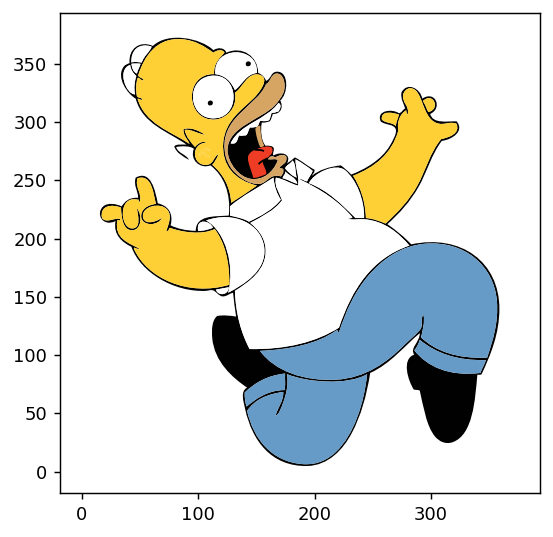
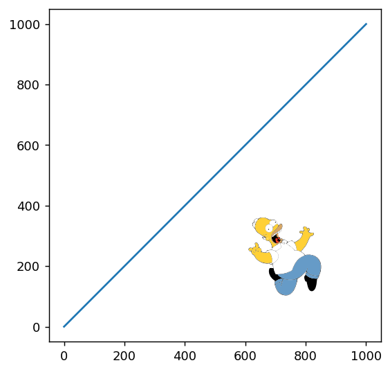
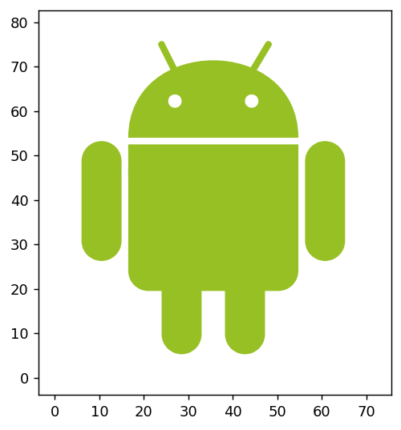
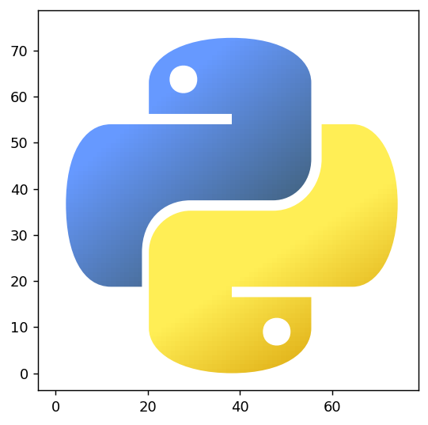
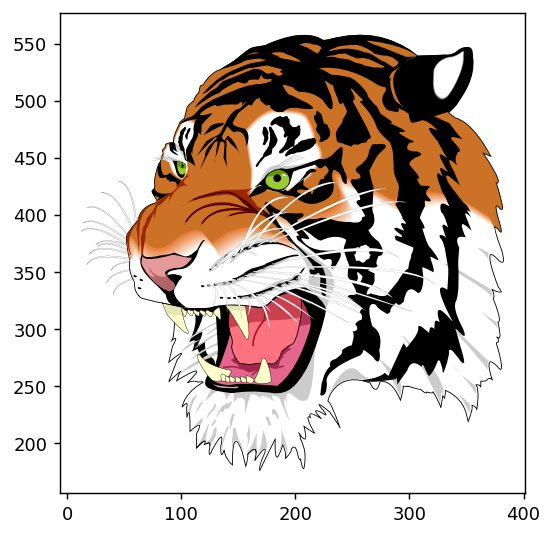
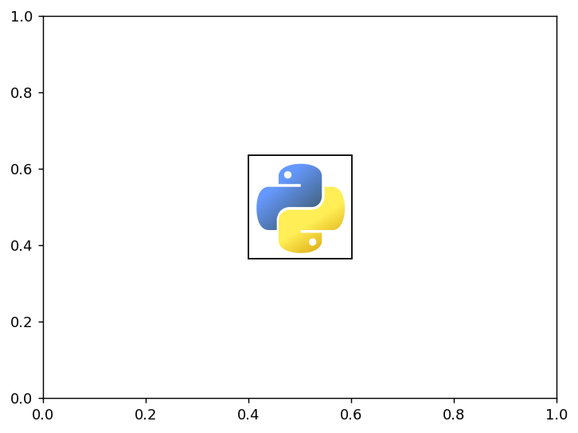

import matplotlib.pyplot as plt
from mpl_simple_svg_parser import SVGMplPathIteratorHow to include svg in your Matplotlib plot as vector format.
This tutorial introduce ‘mpl-simple-svg-parser’ package and demonstrate how one can include svg in Matplotlib, as vector format (Matplotlib’s paths).
https://mpl-simple-svg-parser.readthedocs.io/en/latest/index.html
Based on the demo.py of mpl-simple-svg-parser (mssp in short).
fig, ax = plt.subplots(num=1, clear=True)
ax.set_aspect(1)
fn = "homer-simpson.svg"
svg_mpl_path_iterator = SVGMplPathIterator(open(fn, "rb").read())
svg_mpl_path_iterator.draw(ax)
svg_mpl_path_iterator.viewbox # This is the size defined in the svg file.[0.0, 0.0, 375.0, 375.0]# The default behavior is to respect the size set in the SVG file, and you can scale it at drawing time.
fig, ax = plt.subplots(num=2, clear=True)
ax.set_aspect(1)
ax.plot([0, 1000], [0, 1000])
fn = "homer-simpson.svg"
svg_mpl_path_iterator = SVGMplPathIterator(open(fn, "rb").read())
svg_mpl_path_iterator.draw(ax, xy=(600, 100), scale=0.7)
# By default, mpl-simple-svg-parser (mssp) process the input svg content using cairosvg to produce simplified svg.
# Nonetheless, drawing svg content in the data coordinate can be difficult especially if it has strokes
# as, in Matplotlib, linewidth can only be set in points. In the example below,
# the arms and legs of the robot is too thin as mssp failed to correctly set the stroke widths.
fig, ax = plt.subplots(num=3, clear=True)
ax.set_aspect(1)
fn = "android.svg"
svg_mpl_path_iterator = SVGMplPathIterator(open(fn, "rb").read())
svg_mpl_path_iterator.draw(ax)
Besides the stroke width issue, the default results could be incorrect. For example, mssp does not handle clipping.
For these cases, mssp can be run with “pico=True” option, which will proess the input svg with picosvg in additionto the cairosvg. The side effect of picosvg includes conversion of strokes to fills and clipping of paths.
fig, ax = plt.subplots(num=4, clear=True)
ax.set_aspect(1)
fn = "android.svg"
svg_mpl_path_iterator = SVGMplPathIterator(open(fn, "rb").read(), pico=True)
svg_mpl_path_iterator.draw(ax)
# mssp does support gradient. It works but the implementation is quite naive. It simply uses
# cairosvg to produce gradient bitmap (png) image of svg viewbox size, and let the
# matplotlib's backends to clip it.
fig, ax = plt.subplots(num=5, clear=True)
ax.set_aspect(1)
fn = "python.svg"
svg_mpl_path_iterator = SVGMplPathIterator(open(fn, "rb").read(), svg2svg=True)
svg_mpl_path_iterator.draw(ax)
# Sometimes, the viewbox size in the svg can be incorrect. You can set datalim_mode='path' to ignore the viewbox,
# and try to let matplotlib guess its extent based on extent of individual patches (this can be incorrect sometime.)
fig, ax = plt.subplots(num=6, clear=True)
ax.set_aspect(1)
fn = "tiger.svg"
svg_mpl_path_iterator = SVGMplPathIterator(open(fn, "rb").read(), pico=True)
svg_mpl_path_iterator.draw(ax, datalim_mode="path")
DrawingArea
For the examples so far, we draw the svg in Matplotlb’s data coordinates. Often, you want your svg rendering results, behaves like text, whose size is set in points, independent of data coordinates.
Instead of drawing it direcly on the axes, it is recommented to draw it on DrawingArea – derived from OffsetBox – and use AnnotationBbox to place it on the axes similar to annotation.
from matplotlib.offsetbox import AnnotationBbox
fig, ax = plt.subplots(num=7, clear=True)
fn = "python.svg"
svg_mpl_path_iterator = SVGMplPathIterator(open(fn, "rb").read())
da = svg_mpl_path_iterator.get_drawing_area(ax, wmax=64)
ab = AnnotationBbox(da, (0.5, 0.5), xycoords="data")
ax.add_artist(ab)<matplotlib.offsetbox.AnnotationBbox at 0x7f97797fa590>
The example below demonstrate how you can use AnnotationBbox to add svg in your plot.
https://mpl-simple-svg-parser.readthedocs.io/en/latest/examples/example_annotation_box.html#sphx-glr-examples-example-annotation-box-py

Accessing the parsed results
Once can access the parsed results. The base methods would be ‘iter_path_attrib’ and ‘iter_mpl_path_patch_prop’.
fn = "python.svg"
svg_mpl_path_iterator = SVGMplPathIterator(open(fn, "rb").read())list(svg_mpl_path_iterator.iter_path_attrib())[('M 20.25 12 C 20.25 6.75 27 2.25 38.25 2.25 C 49.5 2.25 55.5 6.75 55.5 12 L 55.5 28.5 C 55.5 33.75 51.75 37.5 47.25 37.5 L 29.25 37.5 C 23.25 37.5 18.75 42 18.75 48.75 L 18.75 56.25 L 12 56.25 C 6 56.25 2.25 49.5 2.25 38.25 C 2.25 27.75 6 21 12 21 L 38.25 21 L 38.25 18.75 L 20.25 18.75 Z M 66 37.5 L 66 38.25 ',
{'id': 'surface94',
'style': ' stroke:none;fill-rule:nonzero;fill:url(#linear0);',
'd': 'M 20.25 12 C 20.25 6.75 27 2.25 38.25 2.25 C 49.5 2.25 55.5 6.75 55.5 12 L 55.5 28.5 C 55.5 33.75 51.75 37.5 47.25 37.5 L 29.25 37.5 C 23.25 37.5 18.75 42 18.75 48.75 L 18.75 56.25 L 12 56.25 C 6 56.25 2.25 49.5 2.25 38.25 C 2.25 27.75 6 21 12 21 L 38.25 21 L 38.25 18.75 L 20.25 18.75 Z M 66 37.5 L 66 38.25 '}),
('M 55.5 65.25 C 55.5 70.5 49.5 75 38.25 75 C 27 75 20.25 70.5 20.25 65.25 L 20.25 48.75 C 20.25 43.5 24.75 39.75 29.25 39.75 L 47.25 39.75 C 53.25 39.75 57.75 34.5 57.75 28.5 L 57.75 21 L 64.5 21 C 69.75 21 74.25 27.75 74.25 38.25 C 74.25 49.5 69.75 56.25 64.5 56.25 L 38.25 56.25 L 38.25 58.5 L 55.5 58.5 Z M 105 37.5 L 105 38.25 ',
{'id': 'surface94',
'style': ' stroke:none;fill-rule:nonzero;fill:url(#linear1);',
'd': 'M 55.5 65.25 C 55.5 70.5 49.5 75 38.25 75 C 27 75 20.25 70.5 20.25 65.25 L 20.25 48.75 C 20.25 43.5 24.75 39.75 29.25 39.75 L 47.25 39.75 C 53.25 39.75 57.75 34.5 57.75 28.5 L 57.75 21 L 64.5 21 C 69.75 21 74.25 27.75 74.25 38.25 C 74.25 49.5 69.75 56.25 64.5 56.25 L 38.25 56.25 L 38.25 58.5 L 55.5 58.5 Z M 105 37.5 L 105 38.25 '}),
('M 51 66 C 51 70 45 70 45 66 C 45 62 51 62 51 66 Z M 51 66 ',
{'id': 'surface94',
'style': ' stroke:none;fill-rule:nonzero;fill:rgb(100%,100%,100%);fill-opacity:1;',
'd': 'M 51 66 C 51 70 45 70 45 66 C 45 62 51 62 51 66 Z M 51 66 '}),
('M 30.75 11.25 C 30.75 15.25 24.75 15.25 24.75 11.25 C 24.75 7.25 30.75 7.25 30.75 11.25 Z M 30.75 11.25 ',
{'id': 'surface94',
'style': ' stroke:none;fill-rule:nonzero;fill:rgb(100%,100%,100%);fill-opacity:1;',
'd': 'M 30.75 11.25 C 30.75 15.25 24.75 15.25 24.75 11.25 C 24.75 7.25 30.75 7.25 30.75 11.25 Z M 30.75 11.25 '})]list(svg_mpl_path_iterator.iter_mpl_path_patch_prop())[(Path(array([[20.25, 63. ],
[20.25, 68.25],
[27. , 72.75],
[38.25, 72.75],
[49.5 , 72.75],
[55.5 , 68.25],
[55.5 , 63. ],
[55.5 , 46.5 ],
[55.5 , 41.25],
[51.75, 37.5 ],
[47.25, 37.5 ],
[29.25, 37.5 ],
[23.25, 37.5 ],
[18.75, 33. ],
[18.75, 26.25],
[18.75, 18.75],
[12. , 18.75],
[ 6. , 18.75],
[ 2.25, 25.5 ],
[ 2.25, 36.75],
[ 2.25, 47.25],
[ 6. , 54. ],
[12. , 54. ],
[38.25, 54. ],
[38.25, 56.25],
[20.25, 56.25],
[20.25, 63. ],
[20.25, 63. ],
[66. , 37.5 ],
[66. , 36.75]]), array([ 1, 4, 4, 4, 4, 4, 4, 2, 4, 4, 4, 2, 4, 4, 4, 2, 2,
4, 4, 4, 4, 4, 4, 2, 2, 2, 2, 79, 1, 2], dtype=uint8)),
{'fc': 'none',
'ec': 'none',
'lw': 1.0,
'alpha': 1,
'fc_orig': 'url(#linear0)'}),
(Path(array([[ 55.5 , 9.75],
[ 55.5 , 4.5 ],
[ 49.5 , 0. ],
[ 38.25, 0. ],
[ 27. , 0. ],
[ 20.25, 4.5 ],
[ 20.25, 9.75],
[ 20.25, 26.25],
[ 20.25, 31.5 ],
[ 24.75, 35.25],
[ 29.25, 35.25],
[ 47.25, 35.25],
[ 53.25, 35.25],
[ 57.75, 40.5 ],
[ 57.75, 46.5 ],
[ 57.75, 54. ],
[ 64.5 , 54. ],
[ 69.75, 54. ],
[ 74.25, 47.25],
[ 74.25, 36.75],
[ 74.25, 25.5 ],
[ 69.75, 18.75],
[ 64.5 , 18.75],
[ 38.25, 18.75],
[ 38.25, 16.5 ],
[ 55.5 , 16.5 ],
[ 55.5 , 9.75],
[ 55.5 , 9.75],
[105. , 37.5 ],
[105. , 36.75]]), array([ 1, 4, 4, 4, 4, 4, 4, 2, 4, 4, 4, 2, 4, 4, 4, 2, 2,
4, 4, 4, 4, 4, 4, 2, 2, 2, 2, 79, 1, 2], dtype=uint8)),
{'fc': 'none',
'ec': 'none',
'lw': 1.0,
'alpha': 1,
'fc_orig': 'url(#linear1)'}),
(Path(array([[51., 9.],
[51., 5.],
[45., 5.],
[45., 9.],
[45., 13.],
[51., 13.],
[51., 9.],
[51., 9.],
[51., 9.]]), array([ 1, 4, 4, 4, 4, 4, 4, 79, 1], dtype=uint8)),
{'fc': array([1., 1., 1.]),
'ec': 'none',
'lw': 1.0,
'alpha': 1.0,
'fc_orig': None}),
(Path(array([[30.75, 63.75],
[30.75, 59.75],
[24.75, 59.75],
[24.75, 63.75],
[24.75, 67.75],
[30.75, 67.75],
[30.75, 63.75],
[30.75, 63.75],
[30.75, 63.75]]), array([ 1, 4, 4, 4, 4, 4, 4, 79, 1], dtype=uint8)),
{'fc': array([1., 1., 1.]),
'ec': 'none',
'lw': 1.0,
'alpha': 1.0,
'fc_orig': None})]